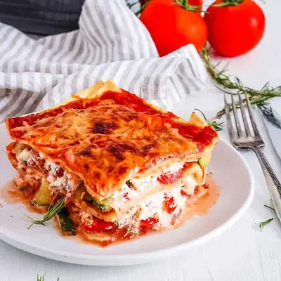

Healthy Vegetable Lasagna

Ingredients
- 2 tsp extra virgin olive oil
- 1 box whole wheat lasagna noodles (uncooked)
- 4 zucchini
- 3 yellow, red or orange bell peppers (diced)
- 6 oz baby spinach (roughly chopped)
- 1 red onion (diced)
- 6 cloves garlic (minced)
- 1 tbsp dried Italian seasoning (more to taste)
- ⅛ tsp crushed red pepper (adjust to taste)
- ¾ tsp salt (adjust to taste)
- 28 oz can of crushed tomatoes (with Italian spices added–like basil, oregano, etc. if you can find that)
- 28 oz jar of pasta sauce
- 1½ cups low fat ricotta cheese
- 1 cup part-skim shredded mozzarella
- 1 cup shredded parmesan or Italian four cheese blend
- olive oil cooking spray
Steps
- Cook the lasagna noodles for about 2-3 minutes less time than the package directions say (leave them slightly al dente).
- Once they’re done, lay them flat on foil and set aside.
- Quarter all 4 zucchini and thinly slice.
- Dice all 3 bell peppers and mince 3 cloves of garlic
- Heat olive oil in a pan over medium heat, saute the garlic, half the diced onion, all of the zucchini and all of the bell peppers together.
- Add the baby spinach at the end (when the zucchini/red pepper are almost done cooking), saute another 3 minutes until spinach is wilted.
- Sprinkle Italian seasoning, salt, and crushed red pepper to taste on top, stir, and let it cook a couple more minutes. Then remove from heat.
- Mince 3 cloves of garlic.
- Spray a medium sized saucepan with cooking spray and lightly saute the garlic and remaining red onion until the onion is translucent.
- Add the crushed tomatoes.
- Add Italian seasoning to taste, if your crushed tomatoes don't have that already added.
- Once the sauce is heated through, turn the heat down on low.
- Combine 1.5 cups of the ricotta cheese and 1 cup of the mozzarella in a bowl. Keep the Parmesan cheese (or Italian blend, if using) separate.
- Spray the bottom of a large casserole dish with cooking spray.
- Put a layer of sauce at the bottom of the dish (For every layer of sauce, I used 1/2 the self-made sauce and 1/2 the pre-made sauce)
- Put a layer of the lasagna noodles.
- Put another layer of the sauce (1/2 pre-made, 1/2 self made).
- Put a layer of the veggies.
- Take the cheese mixture, and put little crumbles of the cheese mixture all over the veggie layer (don’t try to spread it out, the little crumbles seemed to work well).
- Put another layer of the lasagna noodles.
- Layer of sauce.
- Layer of veggies.
- Cheese mixture crumbles.
- Layer of lasagna noodles.
- Layer of sauce.
- Sprinkle 1 cup of the Parmesan cheese (Or Italian Cheese blend) all over the top.
- Cover with foil and bake at 350 degrees for 30 min.
- Uncover and bake for 5 min. longer until the cheese has melted.
Recipe by Anjali Shah · The Picky Eater, from The Picky Eater. Saved here for personal use; the original has the full notes, tips and photos. Open original